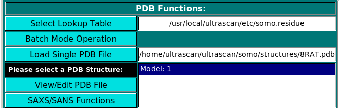
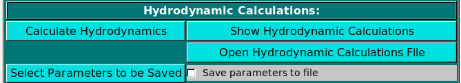
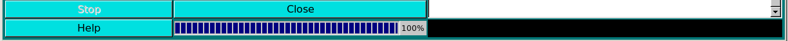
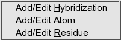
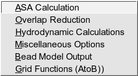
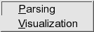

|
Manual
|
SOMO - Solution Modeler (Bead and SAXS/SANS Modeler for NMR and X-ray structures):
Last updated: March 2012
The SOMO (SOlution MOdeller) module of UltraScan initially contained only
a bead modelling utility that was originally developed by the Rocco and
Byron labs, respectively at the Istituto Nazionale per la Ricerca sul Cancro (IST,
Genova, Italy) and at the University of Glasgow (Glasgow, Scotland,
UK). The original code was mainly written by B. Spotorno, G. Tassara,
N. Rai and M. Nollmann. The bead modeling utility in SOMO is based on
a reduced representation of a biomacromolecule, starting from its atomic
coordinates (PDB format), as a set of non-overlapping beads of different radii,
from which the hydrodynamic properties can be calculated using the Garcia
de la Torre-Bloomfield rigid-body approach (García de la Torre and Bloomfield,
Q. Rev. Biophys. 14:81-139, 1981). The reduced representation is afforded by
grouping together atoms and substituting them with a bead of the same volume,
appropriately positioned. Importantly, the volume of the water of hydration
theoretically bound to each group of atoms can be then added to each
bead. The overlaps between the beads are then removed in sequential
steps, but preserving as much as possible the original surface envelope
of the bead model. The method has been fully validated and reported in the
literature (Rai et al., Structure 13:723-734, 2005; Brookes et al., Eur. Biophys. J., 39:423-435, 2010;
Brookes et al., Macromol. Biosci. 10:746-753, 2010). Among the main advantages of this method over shell-modelling
and grid-based procedures are a better treatment of the hydration water and the preservation of a
direct correspondence between beads and original residues. For instance,
the latter feature could be used to include flexibility effects into
the computations. Furthermore, by identifying and excluding from the
hydrodynamic computations beads that are buried and thus not in contact
with the solvent, a large span in the size of the structures that can
be analysed with this method without loss of precision is obtained:
currently, structures from 5K to 250K have been successfully studied. Recently,
we have also improved the original AtoB grid method (Byron, Biophys. J. 72:408-415, 1997),
which was already included within US-SOMO, by adding the theoretical hydration,
accessible surface area screening, and a better preservation of the original surface.
The improved AtoB could be very useful to study large structures and complexes.
Within this new US-SOMO release you will find several additions to what wll be a fully functional
Small-Angle X-ray or Neutron Scattering (SAXS/SANS) simulator, which will work on either the original atomic
structure, or on a bead model, and will also process experimental data. Presently, the pairwise-distance
distribution function P(r) vs. r computation is fully operational, and several methods are offered for the computation of SAXS I(q) vs. q curves. Some of these methods require explicit hydration of the PDB structures. We are currently (March 2012) refining our own hydration method, which is, however, not yet ready for full release. In other areas, the batch operations
module has been expanded to include supercomputing access, with an interface to Discrete Molecular Dynamics (DMD) programs (Dokholyan, NV, Buldyrev, SV, Stanley, HE, and EI Shaknovich. Discrete molecular dynamics studies of the folding of a protein-like model. (1998) Folding & Design 3:577-587; Ding F, Dokholyan NV. Emergence of protein fold families through rational design. Public Library of Science Comput Biol. (2006) 2(7):e85). Other additions include a model classifier in which calculated parameters can be compared and ranked against experimental data, and a PDB editor.
General description:
The program main window contains an upper bar from which all the options
governing its operations can be controlled, and a main panel for program
execution. However, due to its high level of sophistication, properly setting all
the available options can be non-trivial for the general user. Therefore,
the SOMO module is distributed with pre-defined default options that should
allow the direct conversion of a PDB-formatted biomacromolecular structure
file into a bead model, and the computation of its hydrodynamic properties,
without the need of accessing the advanced options menus.
In particular, the SOMO approach is based on properly defining the atoms and
residues found in PDB files, and the rules allowing their conversion
into beads. The SOMO distribution includes the definition of all the standard
amino acids, nucleotides, carbohydrates, and common prosthetic groups and
co-factors, but this list is by no means exhaustive, and the need to code for
"new" residues is not a remote possibility. As this operation can be demanding,
notwithstanding the user-friendly GUI governing it, the pre-defined set of options
includes approximate methods to deal with either missing atoms within coded residues,
and/or not yet coded residues. The available options are to skip non-coded
residues and/or coded residues with missing atoms (not the default option),
or to generate a single bead for each non-coded residue using average
parameters. For coded residues with missing atoms, since most often this is due to
lack of crystallographic data, there's the option of using the complete residue's
bead(s), appropriately positioned. Obviously, there's no cure for completely
missing residues, which will have to be built in the original structure for reliable
results, since the structure should contain all residues and atoms that are present
in the "real" macromolecule studied in solution. Therefore, for best performance all
residues should be properly coded in the SOMO tables (see below).
 |
SOMO Program:
These functions control the execution of the SOMO program, whose progress is
recorded in the right-side main window (in the picture above, a snapshot of the
messages during the model building phase of the 8RAT.pdb structure is shown). They are
divided in three subpanels controlling operations that deal with the primary PDB file
(PDB Functions:), operations relating the generation of bead models (Bead Model
Functions:), and the computation of the hydrodynamic parameters (Hydrodynamic Calculations:).
|
|  |
PDB Functions:
On launching, US-SOMO will automatically load the last used lookup table (default: somo.residue),
where all the informations needed to convert the residues present in atomic structures into beads are stored.
To select a different lookup table, click on Select Lookup Table. You can create multiple
lookup tables for different conditions.
The lookup table needs to contain all atoms and residues present in the (macro)molecule
to be loaded in the next step. By default, SOMO will automatically load the last used *.residue table.
Two alternative options are available to load an atomic structure, such as those derived from NMR or X-ray
crystallography data, the Batch Mode Operation (see here),
or the standard Load Single PDB File.
Selecting a PBD file will also automatically call the molecular visualization program RasMol
(Sayle RA, Milner-White EJ. RasMol: biomolecular graphics for all. Trends Biochem. Sci. 20:374-376, 1995)
which will display the structure(s) in a pop-up window. For Linux-based systems, RasMol needs to be installed in
$ULTRASCAN/bin for 32 bit machines, and $ULTRASCAN/bin64
for 64 bit platforms. You can get a copy of RasMol from
http://www.umass.edu/microbio/rasmol/ or from
http://openrasmol.org/#Software. Besides visualizing the structure, the HEADER and TITLE fields of the PDB file
will be displayed in the progress window, followed by the residues list in both three- and one-letter codes, and by the
partial specific volume (vbar), molecular weight, molecular volume computed both from vbar and from the individual atomic
volumes, and the average electron density of each chain and of the whole structure.
If problems are encountered with the selected PDB file, like the presence of non-coded residues or missing atoms within coded residues, they will be reported in the progress window either as warnings or errors. In the latter case,
the program execution will be also halted, waiting for corrective action to be taken. The original
PDB file can be viewed and, if necessary, edited by clicking on the "View/Edit PDB File
button. In addition, we are currently developing an advanced PDB editor (see
here).
The PDB file can contain multiple models and if so, multiple models will be displayed by
RasMol and in the list box. In this case, you can select just a single model,
or multiple models by holding the crtl key while clicking on the models' names (crtl-A selects
all models). If multiple models are selected, all subsequent operations (except the SAXS/SANS options)
are carried out sequentially on the selected models. Pressing the SAXS/SANS Functions button will take you
to the SAXS/SANS module, where you can perform simulations on the selected PDB structure, or deal with experimental and/or previously generated data. Presently (November 2011), the SAXS/SANS module is in an advanced state but still under development. (see here). The Hydrate button will instead launch a new routine, presently under development, that will add explicit hydration water molecules to the selected structure, allowing a more reliable generation of SAXS/SANS simulated curves. This new functionality will be fully described here. Pressing the RUN DMD button will first open the set-up panel for running a Discrete Molecular Dynamics (DMD) simulation on the selected structure. Once the parameters have been set, the DMD run can be launched through the Cluster utility of the Batch Mode Operation module.
|
 |
Bead Model Functions:
Once one or multiple models are selected, the Build SoMo Bead Model and
Build AtoB (Grid) Bead Model buttons will also become active, the last two offering
alternative ways of generating a bead model.
In the Bead Model suffix field you can enter a tag that will be added to the bead model filename,
which is automatically generated from the PDB filename by adding "_1" and the extension ".bead_model".
In addition, if the Add auto-generated suffix checkbox is selected, the corresponding field above it is
populated with a series of alphanumeric characters specifying the main options chosen. These characters
will be also added to the bead model filename, to allow for a quick identification of the options used in its
generation. Thus, "A20" stands for a residues' ASA cutoff threshold of 20 A (default), "R50" stands for a bead's
ASA re-check cutoff threshold of 50% of its total surface area (default), "hi" signifies hierarchical overlap
reduction in all stages (alternatively, "sy" stands for synchronous overlap reduction), and "OT" means
that the outward translation option during overlap removal of exposed side-chain beads is active. The "-so" suffix
is added if the Build SoMo Bead Model button is then pressed, while the "-a2b" suffix is instead
added if the Build AtoB (Grid) Bead Model button is pressed. In this case, the suffix symbols
also include "Gn" for the grid resolution, with n the actual value, and "hy" if the atomic-level
hydration option is active. Upon loading a PDB file and if the Add auto-generated suffix checkbox is selected,
the corresponding field will show the two current strings available for SoMo and AtoB bead models. If any of the
options coded in the strings are changed, the field will be automatically updated. The final string will appear once
a bead model generation operation is launched.
Note that you can keep processing a loaded PDB file after changing any of the various model-building options
(see below). If the Overwrite existing filenames checkbox is selected, existing filenames will be
overwritten without a warning. Otherwise, a pop up menu will instead appear offering alternative options
(see here). The Overwrite existing filenames
checkbox is automatically selected for batch mode operations. A third button, Grid Existing Bead Model,
will operate the AtoB grid routine on a previously generated bead model. This button is not available
until a PDB file has been processed with either one of the two bead modeling primary options (see above),
or until a previously-generated bead model file has been loaded (see below). If this operation is launched,
the "-a2bg" suffix is automatically added to the filename of the new bead model.
Since model building can take some time, depending on the settings
and especially for large structures, selecting the Automatic Calculate Hydrodynamics
checkbox will allow the direct computation of the hydrodynamic parameters as soon as the model(s)
generation has been completed. If this checkbox is not selected (default option), at the
end of the model building phase the progress bar will be at 100% and the bead model(s) can be
visualized with RasMol by clicking on Visualize Bead Model (recommended,
comparing the original structure with the bead model could reveal previously unforeseen problems).
The results of the accessible surface area (ASA) computations (see below) can also be visualized
in a pop-up window by clicking on the View ASA Results button; this file also includes the
computation of the radius of gyration (Rg) directly from the atomic coordinates of the structure.
A just-generated or previously-generated bead model file can also be opened inside a text editor by pressing
the View Bead Model File button.
Alternatively, you can load one or multiple previously-generated bead model by clicking
on either the Batch Mode Operation (see here)
or the Load Bead Model File buttons from the menu. In these cases, and if the model(s)
was (were) generated/saved in the SOMO format, the various settings/parameters used in model generation will be displayed in
the right-side main window. Note that you can decrease the number of beads used, and thus the
resolution of the model, by applying a grid procedure on a previously-generated bead model with the
Grid Existing Bead Model option (see above). This could be useful when large structures are analyzed,
although using the improved AtoB routine on the original PDB file while increasing the grid size (Build AtoB (Grid) Bead Model) seems to produce much better results. By selecting different file types extensions, other type of bead models can also be loaded, like the old BEAMS-format models, or DAMMIN/DAMMIF-generated models. In this case, a pop-up panel appears requesting entering the partial specific volume and molecular weight of the model. The SAXS/SANS Functions button present in this subpanel will allow to perform SAXS-or SANS-related simulations directly on the currently loaded bead model. (see here). Finally, the Rescale/Equalize Bead Model function (currently not active) will allow an expansion of anhydrous bead models (like DAMMIN/DAMMIF-generated models) to account for an hydration layer.
|
|  |
Hydrodynamic Calculations:
The hydrodynamic parameters can then be determined by clicking on Calculate Hydrodynamics.
A partial list of parameters can be seen in a pop-up window as soon as the calculations are completed by
clicking on Show Hydrodynamic Calculations. The pop-up window
will also list the solvent type, temperature and its associated density and viscosity, as set in the
Hydrodynamic Calculations options module. A full list of
all the parameters is also available as a text file, which can be opened from the results' pop-up window.
Such a list from a previously analyzed model can be opened also from the Open Hydrodynamic Calculations File
button.
The new Select Parameters to be Saved button will open a pop-up window
(see here) where characterizing/computed parameters can be selected
for saving in a comma-separated file for easy import into spreadsheets. Selecting the Save parameters to file
checkbox will generate such file, with extension .csv.
|
|  |
The black bar at the bottom of the progress window will instead report the detailed advancement of some of the
steps in the various phases, like the current slice and atoms (or beads) involved in the ASA routine,
and the iterations in the supermatrix inversion in the hydrodynamic computations. For small structures,
these numbers will be barely flashing by in the box, but for large structures they will allow a more in depth
monitoring of the various stages.
Operations can be halted at any moment by clicking on the Stop button. To avoid inadvertendly
loosing data, the Close button will not immediately close SOMO, but confirmation will be required
in a pop-up window.
|
Options menus:
Four pull-down menus are presently available to access the various SOMO options:
Lookup Tables
SOMO Options
PDB Options
Configurations
Lookup Tables:
 |
From this pull-down menu, you can call four different sub-menus controlling
the four tables containing the definitions of the atoms and residues found in
PDB files, and their SAXS coefficients.
More in detail, you can define/edit the hybridizations, atoms and residues
that need to be interpreted as beads in the bead model generation.
These parameters are collected in different tables that are used
as the components from which the bead sizes and positions are calculated.
PDB structures can then be converted to bead models based on the bead
parameters defined here. For SAXS simulations you also need the atomic
scattering factors coefficients (five exponentials plus a constant) and the
associated excluded volumes.
-
Add/Edit Hybridization: Use this function to modify the hybridization table. In this file you need to list all
hybridizations (as defined in Tsai et al., J. Mol. Biol. 290:253-266, 1999)
that will be used for the definitions of all atoms. Each hybridization
requires a name, a molecular weight (given by the sum of the mw of the
atom being defined plus that of the hydrogen atoms bound to it) and a radius
(in Angstrom units). In addition, the neutron scattering length in H2O,
the number of exchangeable protons, and the total number of electrons are entered
in this module, because they are needed by the SAXS/SANS simulator module. Load the hybridization
file first if one exists, and then the SAXS Coefficients File. This is required because
the hybridization table contains also the atom identifiers linking each atom type to its X-ray
scattering coefficients. The use of this module is described in
this help file.
-
Add/Edit Atom: Use this function to modify the atom table. In this file the atomic groups present
in PDB files are defined, together with their parameters (molecular weight and
radius) loaded from the hybridization table. In addition, for SAXS simulation
this table is also linked to the SAXS coefficients table, and the excluded volume
for each atomic group can be defined in alternative to that of the bare non-hydrogen atom
taken from the SAXS coefficient table. The use of this module is described in
this help file.
-
Add/Edit Residue: Use this function to modify the residue table. This module is used to define all residues
that can be found in PDB files. In this module, you can also define the rules
which are used to convert them into beads. You can add new residues or modify
the properties of the existing ones. The use of this module is described in
this help file.
-
Add/Edit Saxs Coefficients: Use this function to modify the SAXS coefficients table. In this module, you can add/edit
the atomic SAXS coefficients that will be used in the SAXS curve simulator. For each atom, the scattering
factor is approximate by a sum of four exponentials requiring eight coefficients and
a constant. The values in the somo.saxs_atoms are taken from the International Tables of
Crystallography, but can be edited at will. The use of this module is described in
this help file.
|
SOMO Options:
|  |
From this pull-down menu, you can access various panels where you can set all
the available options for different steps in the program. These options are saved
in a system wide config file
$ULTRASCAN/etc/somo.config
Every time you close the SOMO program, the currently defined options will be saved in
$HOME/ultrascan/etc/somo.config
where they will be reloaded from upon startup.
-
ASA Calculation: Use this function to modify the options for
the accessible surface area calculation, which can be done with two
alternative methods, SurfRace (Tsodikov OV, Record MT Jr, Sergeev YV.
Novel computer program for fast exact calculation of accessible and
molecular surface areas and average surface curvature. J. Comput. Chem.
23:600-609, 2002) or ASAB1 (based on Lee B, Richard FM. The interpretation
of protein structures: estimation of static accessibility. J. Mol. Biol.
55:379-400, 1971). The second method is also employed for optionally
re-checking the accessibility of the beads in the final model. A detailed
description of this module can be found here.
-
SoMo Overlap Reduction: This module allows you to change the options
and handle the various issues related to bead overlap elimination in the SoMo
direct correspondence method. A detailed description of this module can be found here.
-
AtoB (Grid) Overlap Reduction: This module allows you to change the options
and handle the various issues related to bead overlap elimination in the AtoB (Grid) method.
A detailed description of this module can be found here.
-
Hydrodynamic Calculations: This module allows you to change
the options for calculating the hydrodynamic parameters of the bead
models. A detailed description of this module can be found here.
-
Miscellaneous Options: This module allows you to either automatically
compute from the composition or manually enter the partial specific volume
of your molecule, and to define the volume used for the hydration water
molecules (water of hydration has different properties than "bulk" water).
Another option controls the disabling of the peptide bond rule used by
the SoMo method to place the main-chain beads. In addition, this module contains
the "average" parameters used by the Automatic Bead Builder to generate
a single bead for non-coded residues (see here).
A detailed description of this module can be found here.
-
Bead Model Output: This module allows you to control the options for
saving the model(s) in a file (or files). A detailed description of this module can be
found here.
-
Grid Functions (AtoB): This module allows you to change the options
to be used during the bead model generation with the grid function (based on
the original program AtoB; Byron O. Construction of hydrodynamic bead models
from high-resolution X-ray crystallographic or nuclear magnetic resonance data.
Biophys. J. 72:408-415, 1997). The Grid module accepts as input either PDB files
or previously-generated bead models. A detailed description of this module can
be found here.
-
SAXS/SANS Functions: This module will control the setting of the SAXS/SANS curve
and P(r) vs. r generator that is currently under development. A detailed description
of this module can be found here.
|
PDB Options:
|  |
|
From this pull-down menu, you can access two panels controlling the options for
parsing the PDB file and for the model(s) visualization by RasMol.
-
Parsing: This module allows you to change the options to be used during
the parsing of a PDB file, like how to deal with solvent molecules, explicit hydrogen
atoms, alternate conformations, and with missing atoms/residues. A detailed description
of this module can be found here. (Remark: some of the
options listed are not presently active).
-
Visualization: This module allows you to select alternative visualization modes
used by RasMol. A detailed description of this module can be found here. (Remark: some of the options listed are not presently active).
|
Configurations:
 |
-
Load Configuration: This option allows you to retrieve a particular
set of options previously saved in a user-specified configuration file (see below).
-
Save Current Configuration: This option allows you to save the currently
selected options for all modules in a user-specified configuration file different
from the standard one in which all current parameters are saved when exiting from
the program.
-
Reset to Default Configuration: This option will reset all
options to default values. The defaults values are stored in a file
(somo.defaults), but are also hard-coded in the program. If the
somo.defaults file is either missing or doesn't have the right
format, US-SOMO will automatically use the hard-coded default values.
When exiting just after clicking on this button will reset the standard
configuration file as well to default options.
-
Advanced Configuration: This option will open a pop-up panel allowing
the settings of various additional options (no help provide at this stage for the advanced configuration options).
|
www contact: Borries Demeler
This document is part of the UltraScan Software Documentation
distribution.
Copyright © notice.
The latest version of this document can always be found at:
http://www.ultrascan.uthscsa.edu
Last modified on March 14, 2012.
{kind=link}
{kind=link}
{kind=link}
{kind=link}